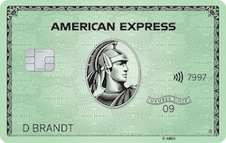

In Germany, the main and practically exclusive loyalty program is the Miles & More of the Lufthansa Group.
 The Miles & More, like the vast majority of loyalty programs, is free, and you can
simply register on the program's website,
without ever having traveled with any of its participating airlines.
The Miles & More, like the vast majority of loyalty programs, is free, and you can
simply register on the program's website,
without ever having traveled with any of its participating airlines.
The following airlines adopt the Miles & More as their loyalty program:
- Lufthansa
- Swiss International Airlines
- Austrian Airlines
- Brussels Airlines
- Eurowings
- Discover Airlines
- LOT Polish Airlines
- Croatia Airlines
- Air Dolomiti
- Luxair
When flying with any of these airlines, you earn miles directly with Miles & More.
Lufthansa is the main airline of the Star Alliance, the world's largest
airline alliance.
This also allows you to accumulate miles when traveling with other alliance's member airlines and use them to redeem tickets not only with Lufthansa Group
airlines but also with other Star Alliance members, using Miles & More for this purpose.
You'll earn points or miles by flying with a total of 35 different airlines.
This significantly expands the possibilities for using Miles & More miles since you can use them for redemption on dozens of airlines.
Starting January 1, 2024, Miles & More has adopted a new status qualification system; information and details are available on the program's website.
Many other Star Alliance airlines also have their own loyalty programs, and there's no point transfer between these programs. This is a crucial detail in deciding where to accumulate your miles when booking a ticket with any Star Alliance airline.
Don't be intimidated by the interplay between airlines, loyalty programs, and alliances. It's not as complicated as it seems, and while it's great
to understand how everything works,
you don't need to be an expert to earn and redeem miles for tickets.
Chasing the perfect and cheapest redemption is a sales pitch term; don't worry about it. In the near future, we'll explain how everything works
and provide some examples on here in how to issue tickets using your Miles & More miles.
For now, the focus is on understanding the possibilities for earning miles and points.
Payback
The Payback is the largest points program in Germany,
also present in other countries such as Austria, Italy, Switzerland, etc.
Payback allows the accumulation of points at various partner stores, including online shops, supermarkets,
pharmacies, gas stations, among others.
Points collected in Payback can be converted into Miles & More miles at a 1:1 ratio, providing a convenient option, given that accumulating Payback points is easier than earning miles directly with Miles & More.
Similar to Miles & More, Payback is free, and you can register directly on the program's website.
How does Payback work?
To accumulate Payback points, you need to have a Payback card, which can be requested for free on the program's website. The card is sent by mail and can be used in physical stores to earn points. However, you can also use the virtual card in the Payback app without the need for the physical card.
For every €2 spent at partner stores, 1 Payback point is accumulated.
This point is called the base point, and it is the minimum point that can be earned at any partner store.
Payback's significant advantage is the opportunity to multiply points by 5, 10, 20, or even 40 times, depending on the partner store
and ongoing promotions. This makes Payback the best option for organically accumulating miles in Germany.
For example, in a €100 purchase, 50 base points are accumulated. When a 10x coupon is used, an additional
500 points are accumulated (50 BP x 10), totaling 500 points.
However, it's important to highlight that accumulating points strategically requires dedication and organization. This process takes time and patience; if it were simple and quick, it would lose the financial advantage for both Payback and its partners.
 Once or twice a year, Payback offers points transfer promotions to Miles & More with bonuses ranging from 20% to 30%.
Once or twice a year, Payback offers points transfer promotions to Miles & More with bonuses ranging from 20% to 30%.
These promotions are announced by email and can also be found on the program's website.
It's important to plan to transfer points during these promotions as they provide short-term opportunities to multiply your points effortlessly.
Tips for Using Payback
- The coupons available in the app are personalized and may differ between accounts. It's common to have coupons in your account that are not available in others you compare.
- Have separate accounts for yourself and your partner(s) or children. Since the coupons are individual, having separate accounts will provide a wider variety of coupons and promotions.
-
Centralize point transfers in a single Miles & More account. If you have different accounts for your family members, points can be transferred
to any Miles & More account, even if it's not in the same name as the Payback account holder.
For promotional transfers, you need a separate Miles & More account for each Payback account, but you can create a Mileage Pool to centralize miles from all accounts within Miles & More. - DO NOT activate automatic transfers to Miles & More; wait for the bonus transfer promotions that occur at the end of the year (and sometimes in the middle of the year as well).
- Remember to accept the use of cookies when making online purchases using links within the Payback website.
-
Earn significant extra points by booking hotels through Payback. There are almost always good coupons for platforms like Booking, H-Hotels,
Expedia, among others.
The extra points earned for hotel bookings are usually credited only between 40 and 60 days after the checkout date. Pay attention to the rules to ensure you don't think you've lost your points.
The same applies to purchases on Amazon and other online stores; always check the rules for each coupon.
Credit Cards

Credit cards represent an excellent way to organically accumulate miles, potentially doubling the accumulations when combined with Payback.
Everything described in the Payback section is independent of the payment method. However, when using credit cards, it's possible to accumulate Payback points and Miles & More miles simultaneously, a double scoring. Additionally, this option allows for points accumulation not only in Germany but anywhere in the world.
There are three main ways to accumulate points via credit cards in Germany:
- Cards that accumulate Payback points and can be transferred to your Miles & More account. (Payback cards)
- Cards that directly accumulate Miles & More miles. (Lufthansa and Eurowings cards)
- AmEx cards that accumulate Membership Rewards and can be transferred to various loyalty programs, hotel networks, and converted to Payback points.
The options for credit cards in Germany that generate miles or Payback points are limited, but some are noteworthy. Below are the main options and the accumulation rates of points/miles:
| Card | Points Payback or M&M per €1000 spent |
|---|---|
| AmEx MR with Turbo1 converted to Payback points2 | 500 |
| Miles & More / Eurowings Cards3 | 500 |
| AmEx MR converted to Payback points | 333 |
| AmEx Payback card4 | 333 |
| Visa Payback card | 200 |
| AmEx Payback with Turbo (not currently available)5 | 666 |
- The Max/Turbo feature from American Express increases the card's points accumulation rate and must be activated as an additional feature of your card, costing €15 per year.
-
American Express Membership Rewards points can be transferred to Payback at a 3:1 ratio (2:1 before), since 01.03.2024. (1000 MR = 333
Payback points)
It is the only available way to use Membership Rewards points in Miles & More, conversion to Payback points, and then transfer to Miles & More. - The major difference between Miles & More and Eurowings cards is that miles accumulated by Eurowings cards have a validity of 36 months.
-
When using AmEx Payback and Visa Payback cards at a partner store, you receive base points + multipliers + the card's accumulation rate.
With the Turbo function, the card's accumulation rate is doubled.
AmEx Payback card: Accumulation rate of 1 Payback point per €3 spent.
Visa Payback card: Accumulation rate of 1 Payback point per €5 spent. - Currently, it is no longer possible to activate the Turbo feature for new AmEx Payback cards. Cards that already have the feature can still use it, but it is uncertain whether the feature renewal will be possible.
As shown in the table, American Express cards offers the highest points accumulation ratio, despite their limited acceptance in Germany. Although AmEx owns Payback, acceptance in physical stores is still restricted. However, for online use, acceptance is generally equivalent to Visa and Mastercard.
Important: AmEx Membership Rewards points can be transferred to various loyalty programs, not limited to Miles & More and Star Alliance airlines.
Additionally, depending on the chosen AmEx card, various other benefits are offered, such as hotel network status, access to airport lounges, restaurant and car rental bonuses, among others, not offered by other Visa/Mastercard cards in Germany.
If you opt for an AmEx card, it is mandatory to have a Visa or Mastercard backup card to use where AmEx is not accepted.
Recommendation: Considering ONLY miles accumulation, the most basic suggestion for your cards wallet is as follows (in order of priority):


1. American Express Card (the green card) with MR Turbo
2. Miles & More Credit Card Blue
3. (Backup) Eurowings Credit Card Classic
Important: If you are applying for more than 1 American Express card, always request the AmEx Payback last.
Other important credit carde's perks that HAVE NOT been considered in the list above:
- Welcome bonus: many cards offer a welcome bonus, which can be advantageous, but it's important to check the terms and conditions.
- Insurances: various cards offer travel cancellation/delay insurances, luggage, car rental, purchase insurances, etc. It's recommended to evaluate whether these insurances are suitable for your needs.
- Annual fee: most cards have an annual fee, but some offer a waiver for the first year or vouchers/bonuses for purchases, theoretically "reducing" the annual cost of the card.
- Additional Card: American Express usually provide an additional card at no cost, which can be interesting to increase miles accumulation. For any other card, you have to pay for an additional card.
- Other benefits: some cards offer additional benefits, such as hotel network status, access to airport lounges, concierge services, among others.
If all of these perks or a combination of some of them are important to you, it's worth considering the Amex Platinum card.
A less feature rich option is the Lufthansa Gold card, which offers some of these benefits, but far from the Platinum offers.
Important Tip for AmEx Cards: For online use in stores that do not accept AmEx, you can add the card to PayPal as the default payment method and use PayPal to make online purchases.
Beyond the Basics
The options described above are the most basic and straightforward for accumulating miles in Germany. Here is our list of suggestions for the most complete credit cards, which offer more benefits than just earning miles:
1. Absolute Best Overall: American Express Platinum Card
2. Best overall Cost vs Benefits: American Express Gold Card
3. (Backup) Best overall Cost vs Benefits: Eurowings Premium or Miles & More Gold (just because of better promotions)
Miles & More Shopping Offers
Miles & More offers various options for accumulating miles, in addition to flying with partner airlines.
One of the most interesting options is the
Miles & More Offers, which allows you to earn miles on online shopping from various partner stores.
Various temporary promotions are also offered for earning miles on online purchases, car rentals, fueling, hotel reservations, etc.
These promotions are usually announced via email but can also be found on the program's website.
Paying bills using Revolut

If you live in Germany, you know that paying bills with a credit card is very challenging, almost impossible, in fact.
Most bills are paid by bank transfers or direct debits to your account.
However, Revolut offers an interest alternative to this.
Revolut is a free digital bank similar to N26.
It's worth noting that Revolut is a British company with a banking license issued by Lithuania for its operations in Europe (outside the UK),
fully regulated and compliant with EU laws.
Revolut is an excellent choice for frequent travelers to locations with different currencies, as it allows currency conversion with very favorable
rates, better than Wise.
The whole strategy is simply to deposit on Revolut the amount you need to pay your bills with your credit card.
Here are some examples to illustrate how to use Revolut to pay your bills using a credit card while accumulating miles:
1. Payment of bills with Revolut via bank transfer:- Within Revolut, go to add money and "deposit" the amount of the bill that needs to be paid. For example, 100€. At this step, your credit card was used, and it will accumulate points/miles normally.
- After the deposit is made, the amount is immediately available for use. Now, simply make a bank transfer using the deposited 100€ to pay the bill.
A slight variation of example 1, in a scenario where you pay bills totaling 2000€ every month:
- Deposit 2000€ at once into your Revolut account using the credit card.
- In transfers, create scheduled transfers for all recurring bills (with fixed amounts) of the month, and set them to repeat automatically every month. When the execution day arrives, the account balance will be used.
If, in addition to paying bills, you frequently send money to another country, using Revolut can be a significant advantage for this type of expense, which usually doesn't benefit those living in Germany.
Important:- Currently, in January 2024, only Miles & More cards, issued by DKB, are accumulating miles when using Revolut.
-
Other credit cards, such as Eurowings cards issued by Barclays, do not accumulate miles when adding money to Revolut.
- American Express credit cards are not accepted by Revolut.
- In 2025, Miles & More cards from Germany will be issued by Deutsche Bank, and it's uncertain whether this strategy will work with the new cards or if the current cards issued by DKB gonna still be valid.
-
There are many cases of cards being blocked by DKB due to suspicion of fraud or "misuse" if you deposit the total credit amount, or close to it, into Revolut
and do not use the card for anything else. (source: angry people on Reddit)
This can actually harm all Revolut users, as DKB may simply remove the accumulation of miles for all cards when using on Revolut.
Use this feature with moderation and common sense.
Conclusion: Revolut is an excellent option for accumulating miles when paying bills with a credit card, but only for those who have the Miles & More card issued by DKB*.
* If you have successfully accumulated miles with other credit cards by adding money to Revolut, please contact us using the links in the footer.
Alternatives?
There are some other apps that supposedly also work for bank transfers by making deposits via credit card, including: PaySend,
Remitly,
and Wise, which is a larger and recognized platform.
All three platforms mentioned, charge a fee for making transfers in the same currency, which is why Revolut is the best available option.
None of these platforms have a banking license, so read the terms of use for each one to understand potential risks.
Wunschgutschein - Gift Cards

The Wunschgutschein is a large gift card portal and always has great promotions in partnership with Payback.
These promotions typically offer good multipliers and are provided by both Payback and other partners like Rewe and Penny.
Wunschgutschein gift cards can be used at more than 300 online and/or physical stores and services.
This allows you to plan significant purchases at Wunschgutschein partner stores and use Payback promotions
to buy gift cards for later use in the stores of your interest.
Additional tip: The same applies to other types of gift cards, such as Apple, PlayStation Store,
Google Store, Zalando, etc.
Always keep an eye on the Payback app, as these promotions are rotated among partners. Every month, there are one or
two valid promotions with different partners, and it's always possible to accumulate extra points with multipliers.
Is that all?
No, there are other ways to earn miles in other loyalty programmes outside of Germany, but the options described here are the most relevant and offer the best benefits for earning Miles & More miles and Payback points on your everyday spending.
If you know of any other ways to earn miles in Germany, please contact us using the links in the footer.
Free and Open Content
We believe that knowledge should be open, shared, and available to everyone.
That's why we provide all the content on this site for free, with no restrictions,
and with open-source code for anyone who wants to copy it.
If the content has helped you in any way, consider sharing this site with your friends and family living in Germany.
Consider using our referral links to sign up for any of the services mentioned here (completely optional):